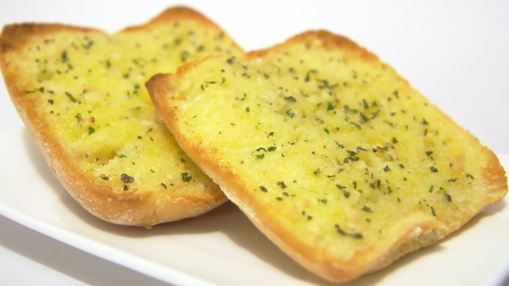

Simple Garlic Bread

This garlic bread is not only incredibly easy to make, but it tastes fabulous and
is a great starter to hold you over until your mains arrive.
Ingredients
- 2 slices of white bread
- 80g softened butter
- 3 cloves fresh chopped garlic
- 1 tsp parsley
- pinch of salt
Instructions
- Make the garlic butter by adding your butter, garlic, parsley and salt into a
bowl.
- Mix it well and spread it on your bread.
- Cook in oven until it goes brown, golden and crispy.
- Enjoy!